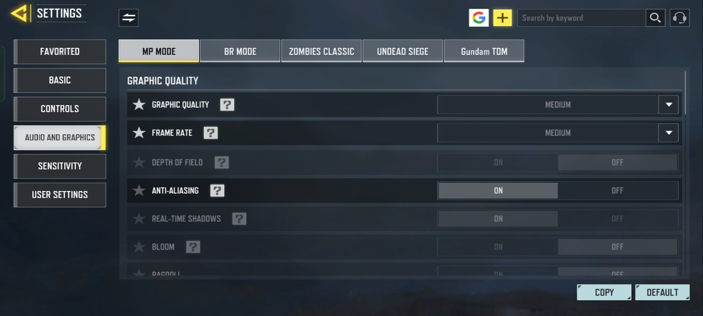
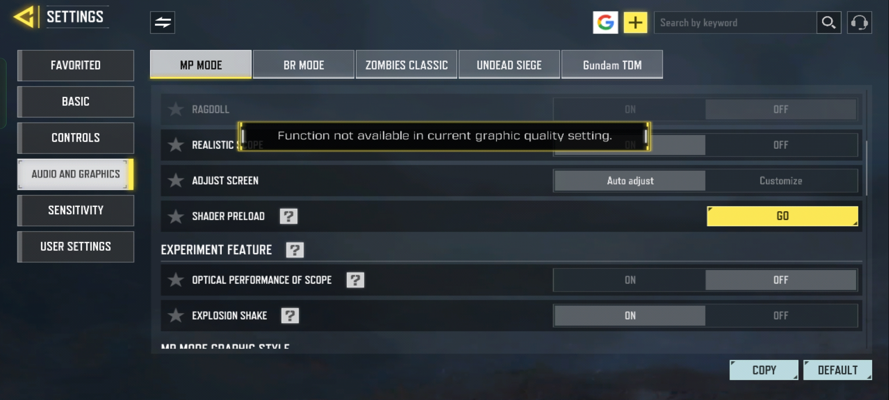
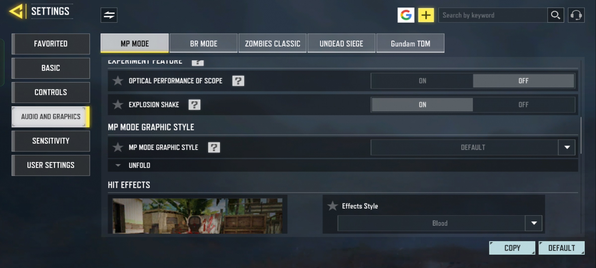

Graphics Settings
  Device Optimization
- Close background apps before playing(Can Use App Killer.Safe.)
- Enable **Game Mode / Performance Mode** if available(if option available in low end device its better not to enable.
- Install Game Optimizer(game booster 4x.safe.)
- Keep battery above 20% to avoid throttling.
- Clear cache of game regularly for smoother performance.
Network Stability
- Use a **5GHz Wi-Fi** for lower latency.
- Avoid downloading,charging or multitasking while gaming.
- Ping higher servers only if local is unstable.
Extra Tips
- Use **headphones** for better sound spotting.
- Turn off voice chat if lag spikes occur.
- Lower resolution scaling if your phone supports it.